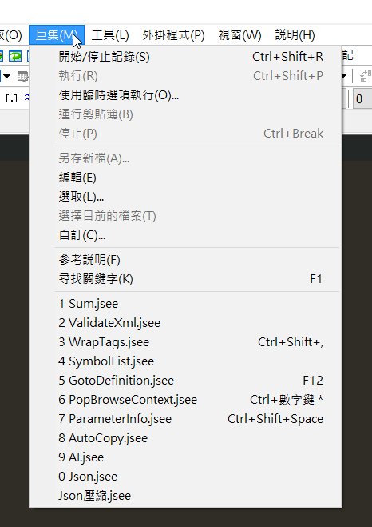

EmEditor 介紹與 JSON 壓縮/解壓縮教程
前言：
工作的時候拿到了超過1G以上的JSON檔，使用VSCODE、跟NotePad++雖然都能開啟，但是速度真的慢，而且JSON也因為太大無法做格式化動作，於是開始找能開啟大檔案的軟體。
1. EmEditor 軟體介紹
EmEditor 是一款強大的文本編輯器,專為處理大型文件而設計。以下是其主要特點：
- 高性能：能夠輕鬆處理超過 248GB 的大型文件。
- 多功能：支持多種編碼,語法高亮,正則表達式等。
- 可定制：提供豐富的插件和自定義選項。
- CSV/TSV 支持：優秀的電子表格處理能力。
- 宏和腳本：支持錄製宏和執行 JavaScript 腳本。
- 多語言支持：包括中文在內的多種語言界面。
對大型 JSON 文件的優勢
- 可以快速打開和編輯大型 JSON 文件。
- 提供 JSON 格式化和壓縮功能。
- 支持通過腳本進行高級 JSON 操作。
2. 使用 JavaScript 腳本進行 JSON 壓縮與解壓縮
EmEditor 允許用戶使用 JavaScript 腳本來增強其功能。以下是如何編寫和使用腳本來壓縮和解壓縮 JSON：
JSON 壓縮腳本
document.selection.SelectAll();
document.selection.Text = JSON.stringify(JSON.parse(document.selection.Text));這個腳本的工作原理：
document.selection.SelectAll()選中所有文本。JSON.parse()將文本解析為 JavaScript 對象。JSON.stringify()將對象轉換回 JSON 字符串,但不帶任何格式化。- 結果替換了原有的文本,實現了 JSON 的壓縮。
JSON 解壓縮（格式化）腳本
document.selection.SelectAll();
document.selection.Text = JSON.stringify(JSON.parse(document.selection.Text), null, '\t');這個腳本的工作原理：
- 選中所有文本並解析為 JavaScript 對象,與壓縮腳本相同。
JSON.stringify()中的額外參數：null表示不使用替換函數。'\t'指定使用製表符進行縮進,使 JSON 更易讀。
3. 在 EmEditor 中使用腳本
- 打開 EmEditor 並載入您的 JSON 文件。
- 在新開的頁面貼上相應的腳本。
- 保存成jsee檔,給它一個描述性的名稱（如 “JSON壓縮” 或 “JSON解壓縮”）。
- 點擊「巨集」>「自訂」。
 - 點擊添加，將剛剛寫的jsee檔添加。
4. 實用技巧
- 為這些腳本分配快捷鍵,以便更快地執行。
- 在處理非常大的文件時,可能需要增加 EmEditor 的內存使用限制。
- 使用 EmEditor 的「大檔案控制器」功能來更有效地處理大型 JSON 文件。
結論
EmEditor 結合 JavaScript 腳本為處理大型 JSON 文件提供了強大而靈活的解決方案。通過掌握這些技巧,您可以輕鬆地對 JSON 數據進行壓縮、解壓縮和格式化,大大提高工作效率。